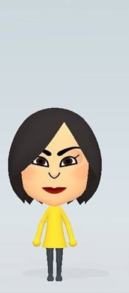
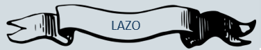
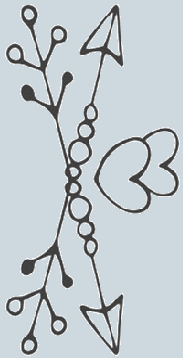

|  | ||||
Queremos que sean parte de nuestra historia |
||||
Oscar Montoya Nava |
& |
Leticia Rocha Covarrubias |
||
Deseamos que sean nuestros PADRINOS DE |
||||
|  | ||||
El lazo es un símbolo de unión eterna de la pareja. Los padrinos de lazo son encargados de dar la bendición a los novios para tener un matrimonio lleno de respeto y amor. Los padrinos de lazo deben señalar las fortalezas y debilidades de una relación y es recomendado elegir a una pareja que haya estado junta por un largo período de tiempo que haya superado diferentes situaciones.
|  | Los hemos escogido porque han estado en mi vida por un largo tiempo, porque a pesar de no ser parte de mi familia, siempre han estado al pendiente de mi vida y han sido prácticamente mis segundos padres. |
Queremos que sean nuestros padrinos y que nos aconsejen sobre los posible escenarios que se avecinen. |
Queremos que sean parte de nuestra historia |
||||
Oscar Montoya Nava |
& |
Leticia Rocha Covarrubias |
||
Deseamos que sean nuestros PADRINOS DE |
||||
El lazo es un símbolo de unión eterna de la pareja. Los padrinos de lazo son encargados de dar la bendición a los novios para tener un matrimonio lleno de respeto y amor. Los padrinos de lazo deben señalar las fortalezas y debilidades de una relación y es recomendado elegir a una pareja que haya estado junta por un largo período de tiempo que haya superado diferentes situaciones.
Los hemos escogido porque han estado en mi vida por un largo tiempo, porque a pesar de no ser parte de mi familia, siempre han estado al pendiente de mi vida y han sido prácticamente mis segundos padres. |
|
Queremos que sean nuestros padrinos y que nos aconsejen sobre los posible escenarios que se avecinen. |
| Padrinos | Anillos |
_es